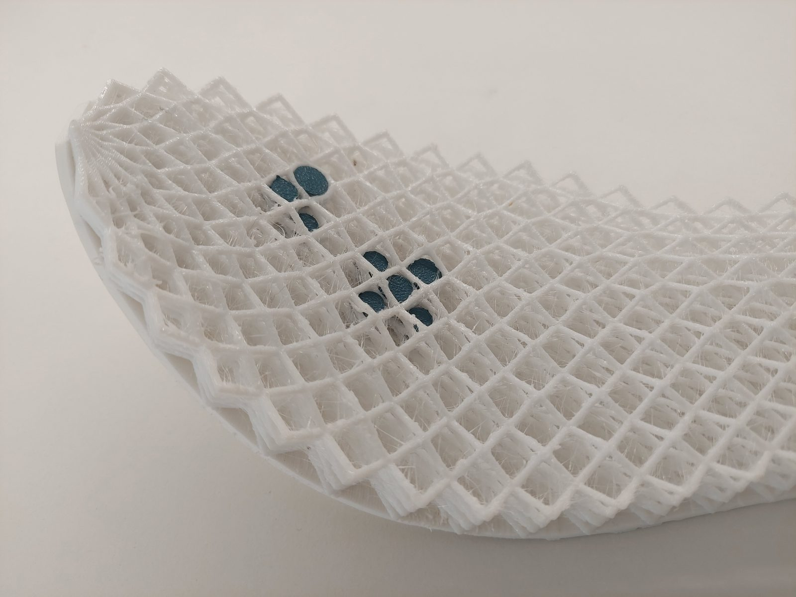
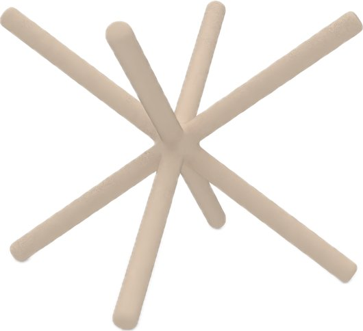
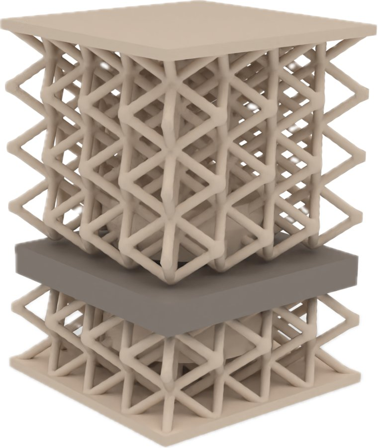
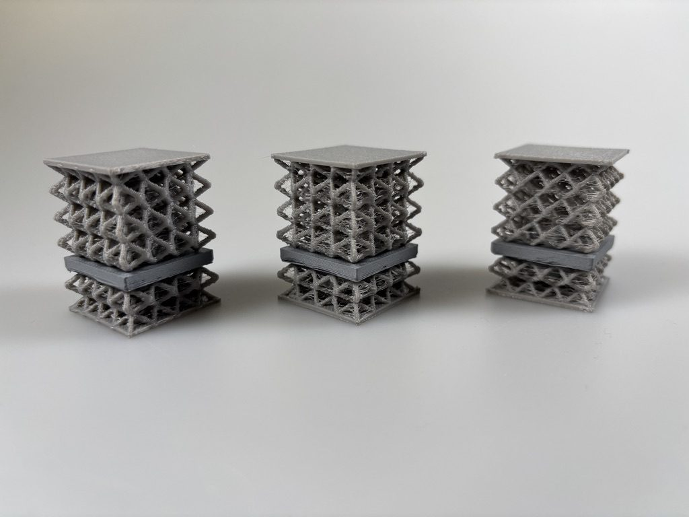
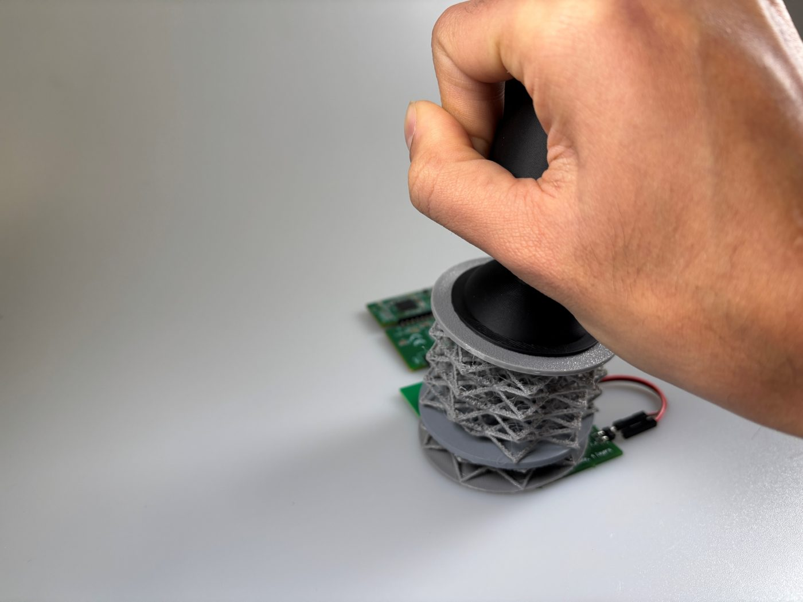
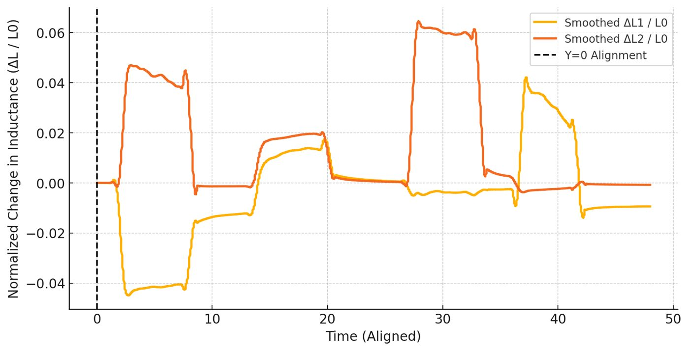

Completed project · Doctoral research
3D-Printed Soft Sensitive Structures
Soft, customizable pressure sensors made entirely by 3D printing — a flexible lattice that squeezes and springs back, with a ferromagnetic core that a coil can “feel” moving.

01
Why
There is a growing need for soft, customizable pressure sensors — in wearables, controllers and everyday objects. Most soft sensors depend on special materials, delicate wiring or complex assembly.
This project asks whether a sensor can be made entirely by 3D printing from off-the-shelf filaments, with its softness set by geometry, and easily connected to electronics — by using inductive sensing.
02
Softness from structure
Softness comes from two things working together. The material is TPU, a flexible thermoplastic polyurethane filament. The form is a lattice built from BCC (body-centred cubic) unit cells — thin beams that bend and buckle under pressure, then return the structure to its original shape when the pressure is released.
Because the lattice does the work, stiffness can be tuned by geometry rather than material. Changing only the beam thickness (1.0, 1.2 and 1.4 mm) produced three sensors with clearly different stiffness, from the same filament and printer.



03
Sensing by induction
Inside the soft TPU lattice sits a core printed in ferromagnetic PETG — a filament that is magnetically detectable. Below the structure is a flat PCB coil (29 mm diameter) read by an LDC1614 inductance-to-digital converter.
When the lattice is pressed, the ferromagnetic core moves closer to the coil and its effective inductance changes; when the pressure is released, the lattice recovers and the signal returns. The readout electronics sit underneath the structure, so the soft part itself stays simple to print and replace.
- Print the TPU lattice and the ferromagnetic PETG core.
- Snap the rigid core into the flexible lattice using a snap mechanism that joins the two materials.
- Place the structure on the PCB coil; pressure now reads as a change in inductance.
04
Tested & characterized
An automated test setup pressed each of the three sensors under varying loads to measure elasticity (Young’s moduli across strain ranges), sensitivity (change in effective inductance with applied pressure) and stability over repeated compression. Different beam thicknesses respond best to different pressure ranges.
112–368 kPa
Tunable stiffness
−0.17 to −0.11 %/kPa
Sensitivity
10,000
Compression cycles, stable
05
Application: a joystick
Arranging the lattice around a handle with two sensing channels turns it into a soft joystick with 2-axis sensing. Tilting it up, down, left or right compresses different parts of the structure and produces a distinct signal for each direction.


06
Publications
- 2025Inductive Pressure Sensors Using 3D-Printed Structures with Tunable StiffnessR. Bhaumik, T. Preindl, A. Ion, C. Ayala-Garcia, N. Cohen, M. Haller, N. Münzenrieder · IEEE Sensors Letters
- 2026InSense3D: Designing Smart 3D-Printed Structures Leveraging Ferromagnetic Filaments for Inductive Deformation SensingR. Bhaumik, C. Ayala-Garcia, N. Münzenrieder, M. Haller, A. Ion · ACM CHI